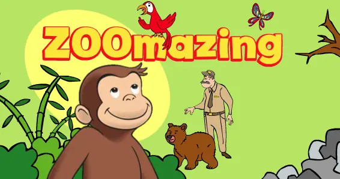
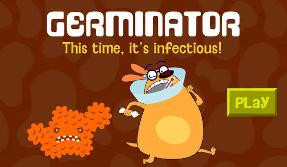

Arthur: Buster Baxter Lung Defender
Available
I remember struggling with the timing when trying to catch the viruses, though playing it again now, it was much simpler than I remembered.
The PBS Kids games I remember playing growing up.
These are games I can still find and replay today. I’m writing about what I remembered, what I forgot and how they feel now compared to when I was younger.
Available
I remember struggling with the timing when trying to catch the viruses, though playing it again now, it was much simpler than I remembered.

Available
I remember playing this game with my sibling, and we would laugh uncontrollably at how ridiculous the fighting mechanics were.

Available
I remember enjoying this game a lot because of the tea party theme and how much freedom it gave you to choose the table setup. I suppose this is one of the places where my creative side started to show, since I would spend a ridiculous amount of time picking the tablecloth, cups, teapot, and snacks.

Available
Looking back, Dinosaur Train definitely helped shape my love for dinosaurs at a young age, and that interest has carried over to this day. I was also surprised by how educational the franchise really was. All Aboard! is quite a short game, even though I remember it feeling much longer as a kid, which was probably because I replayed it so many times.

Available
ZOOmazing is one of the Curious George games I remember playing the most as a kid. Even though the premise is pretty simple, I remember finding it slightly difficult at the time. Looking back, it may have also helped kickstart my love of zoos and wild animals, which has stuck with me ever since.

Available
I do not remember as much about Crazy Vehicle as some of the other games I played growing up, but I do remember finding it entertaining to transform the vehicle for each situation. There was also something oddly satisfying about clicking the different buttons and watching the vehicle change.

Available
Zoe's Dance Moves was not one of the PBS Kids games I played as often, mostly because it was fairly short and I did not spend as much time with Sesame Street games in general. I do remember really liking the colorful, girly interface though, especially the part where you could pick an outfit for Zoe before starting.

Available
Germinator is the only game from The Ruff Ruffman Show that I clearly remember playing, and for years I actually mixed it up with Arthur: Buster Baxter Lung Defender because of their similar premises. I remember finding Germinator pretty difficult as a kid, but I still enjoyed playing it and managed to make my way through it.

Available
Clifford's Big Parade is another creativity-focused game I loved as a kid. The premise is very straightforward: you choose a theme for your parade float, pick decorations that match it, and place them wherever you want before watching the finished float appear in the parade.

Available
Pretty Princess Magical Rescue Adventure Game was one of the WordGirl games I played a lot growing up. I really liked how unapologetically girly the game looked, while still giving you the option to play as Becky's younger brother when rescuing the princess.
I remember playing games from these shows, but I haven’t been able to find the specific ones I remember anymore.
Super Why is one of the few franchises where I have not been able to properly revisit the games I remember playing, either because they are no longer available or have been reworked into newer versions. Princess Presto was always my favorite character, and one of the games I remember most clearly is Princess Presto's Golden Crown Spelling Bee.